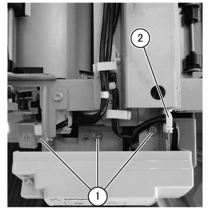
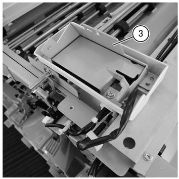
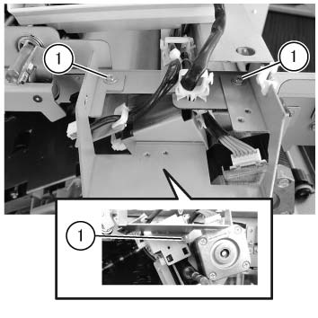
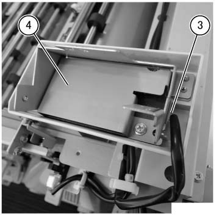
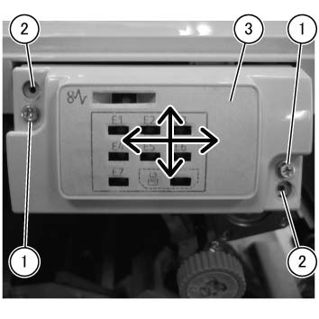
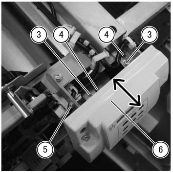

REP 47.5.1 (SCC) TCBM SW/LED PWB 组件 
参考 PL:PL 47.5
Removal

执行IOT关机步骤. 确认电源已关闭并拔掉电源插头.
打开前盖板. (PL 47.1)
拆卸顶盖组件. (PL 47.1)
拆卸 释放 Inner 盖板. (PL 47.1)
拆卸 上方 零件/部分 的 TCBM SW/LED PWB 组件 从 the 主机.
拆卸螺钉（x3）. (图 1)
释放 线束 从 卡箍. (图 1)

(图 1) tcw447002
Place the removed 上方 零件/部分 的 TCBM SW/LED PWB 组件 和 place it 在...上 顶部 Support 支架. (图 2)

(图 2) tcw447003
拆卸 旋钮 组件. (PL 47.12)
拆卸 摆动 Inner 盖板. (PL 47.12)
拆卸 TCBM SW/LED PWB 组件.
拆卸螺钉（x3）. (图 3)
拆卸 Mimic 支架. (图 3)

(图 3) tcw447004
断开连接器. (图 4)
拆卸 TCBM SW/LED PWB 组件. (图 4)

(图 4) tcw447005
安装
安装时 the TCBM SW/LED PWB 组件, 调整 位置 as 所需的.
打开前盖板. (PL 47.1)
调整 顶部/底部 位置.
拆卸螺钉（x2）.
Temporarily fix the 螺钉（x2） to 螺钉 hole 该 不是 used.
调整 位置 in the 方向 的 arrow, 和 用...固定 the 螺钉（x2） 在...之后 调整.
标准 值
The 宽度 的 gap 和/与 前面 盖板 is 0.5 mm或 更少
The 电平 difference 使用 前面 盖板 is 0.5mm或 更少 (impossible to pop 出).

(图 5) tcw447006
调整 depth.
拆卸顶盖组件. (PL 47.1)
拆卸 释放 Inner 盖板. (PL 47.1)
拆卸螺钉（x2）.
Temporarily fix the 螺钉（x2） to 螺钉 hole 该 不是 used.
松开螺钉.
调整 位置 in the 方向 的 arrow, 和 用...固定 the 螺钉（x2） 在...之后 调整.
标准 值
The 宽度 的 gap 和/与 前面 盖板 is 0.5 mm或 更少
The 电平 difference 使用 前面 盖板 is 0.5mm或 更少 (impossible to pop 出).

(图 6) tcw447007
在...之后 the 调整, 拧紧 the 螺钉.